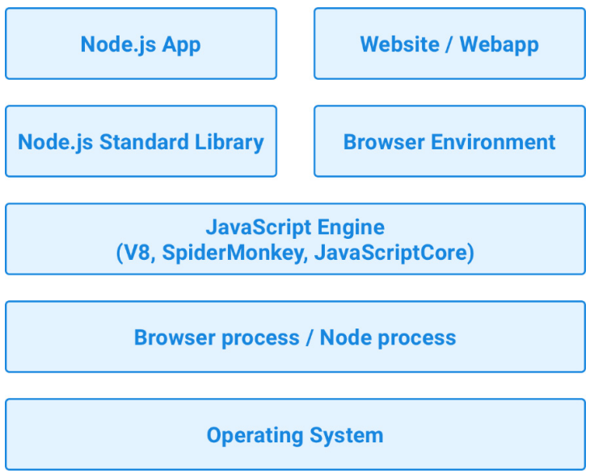
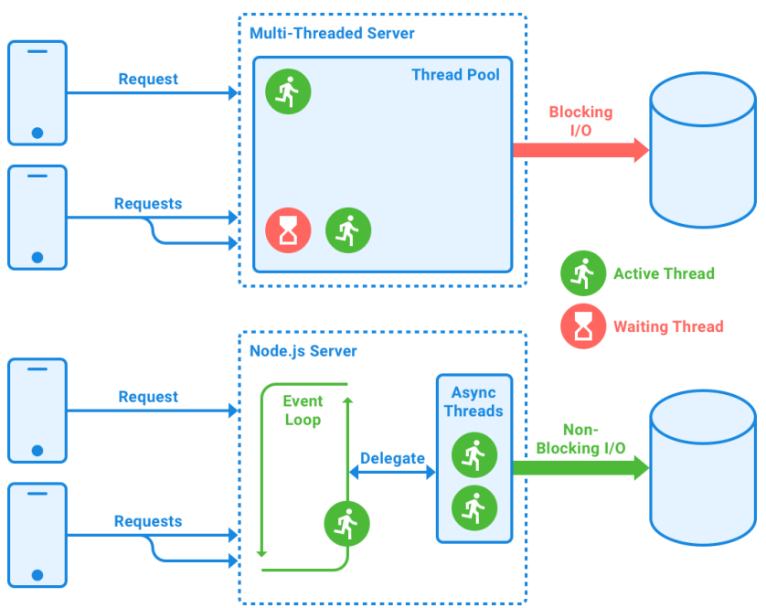
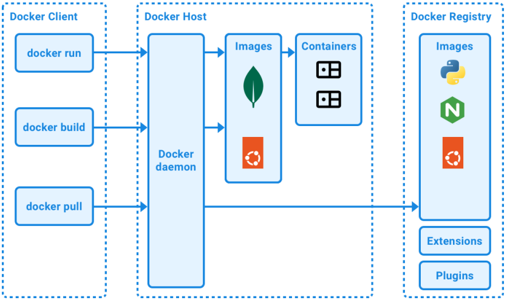

Single thread in node can handle multiple requests
In node every file is a module, variables and functions inside of that file are scope in that module. they are not available outside of that module
Event : A signal that something has happened
requirement for vs code
Docker (by Microsoft)
ESLint (by Microsoft)
Prettier Code formatter (by Prettier)
MongoDB for VS Code (by MongoDB)
setup a frontend project with react
$ npm create vite@5.0.0 .
framework react and variant is javascript
npm install
run npm run dev to start the dev server
Installing the necessary dependencies
npm install --save-dev prettier@3.1.0 \ eslint@8.54.0 \ eslint-plugin-react@7.33.2 \ eslint-config-prettier@9.0.0 \ eslint-plugin-jsx-a11y@6.8.0
prettier: Formats our code automatically according to a defined code style
eslint: Analyzes our code and enforces best practices
eslint-config-react: Enables rules in ESLint relevant to React projects
eslint-config-prettier: Disables rules relating to code style in ESLint so that Prettier can handle them instead
eslint-plugin-jsx-a11y: Allows to check for accessibility (a11y) issues in our JSX code
The --save-dev flag in npm saves those dependencies as dev dependencies, which means that they will only be installed for development. They will not be installed and included in a deployed app. This is important in order to keep the size of our containers as small as possible later.
.prettierrc.json dist/ The node_modules/ folder is automatically ignored by Prettier
ESLint focuses on the actual code, avoiding common mistakes or unnecessary code, read page 14 of the book
npx eslint src in the Terminal to run the linter.
npx eslint src --fix
The npx command allows us to execute commands provided by npm packages, in a similar context as running them in package.json scripts would do. It can also run remote packages without installing them permanently. If the package is not installed yet, it will ask you whether it should do this.
add a lint script to package.json
npm pkg set scripts.lint="eslint src"
Now, run npm run lint in the Terminal. This should execute eslint src successfully,just like npx eslint src did:
Setting up Husky to make sure we commit proper code
we can set up Husky and lint-staged, which run before we commit our code to Git and ensure that Prettier and ESLint are executed successfully on the source code before it is committed
npm install --save-dev husky@8.0.3 \ lint-staged@15.1.0
Add the husky install script to a prepare script in package.json, so that Husky gets installed automatically when the project is cloned and npm install is executed
npm pkg set scripts.prepare="husky install"
Since we do not need to run npm install again right now, we need to manually run the prepare script this time: npm run prepare
Add a pre-commit hook for lint-staged, so that ESLint and Prettier run every time we do git commit: npx husky add .husky/pre-commit "npx lint-staged"
fix: For bug fixes
feat: For new features
refactor: For restructuring the code without adding features or fixing bugs
build: For changes in the build system or dependencies
ci: For changes in the CI/CD configuration
docs: For changes in the documentation only
perf: For performance optimizations
For fixing code formatting
test: For adding or adjusting tests
Similarities and differences between JavaScript in the browser and in Node.js
The default behavior in Node.js is to run everything asynchronously,
in Node.js, libuv is responsible for assigning threads for I/O operations while giving us, as a programmer, access to a single runtime thread to write our code in.
However, this does not mean that each connection to our backend will create a new thread. Threads are created on the fly when advantageous. As a developer, we do not have to deal with multi-threading and can focus on developing with asynchronous code and callbacks.
If code is synchronous, it is executed directly by putting it on the call stack. If code is asynchronous, the operation is started, and the instance of that operation is stored in a queue, together with a callback function
The Node.js runtime will first execute all code left in the stack
The following diagram visualizes the difference between multi-threaded servers and a Node.js server:
Introducing Docker, a platform for containers
The Docker platform essentially consists of three parts:
Docker Client: Can run commands by sending them to the Docker daemon, which is either running on the local machine or a remote environment.
Docker Host: Contains the Docker daemon, images, and containers
Docker Registry: Hosts and stores docker images, extensions, and plugins. By default, the public registry Docker Hub will be used to search for images.
Docker images can be thought of as read-only templates and are used to create containers
Docker containers are instances of images.
Installing docker
The easiest way to set up the Docker platform for local development is using Docker Desktop
Creating a container : docker run -i -t ubuntu:24.04 /bin/bash
by executing the following command to see which operating system is running: uname -a
If you get a version number that ends with -linuxkit, you have successfully run a command in the container
You can now type the following command to exit: exit